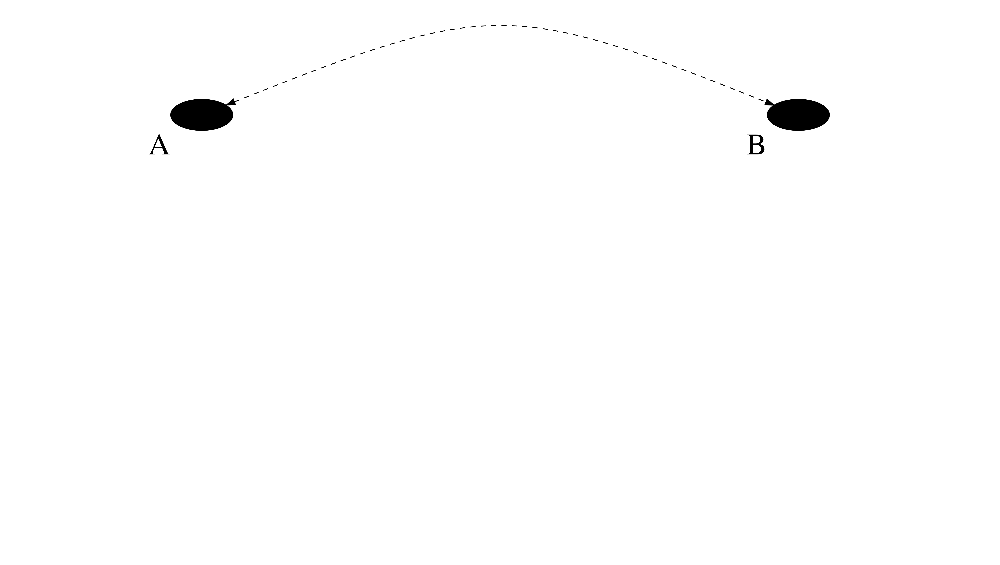
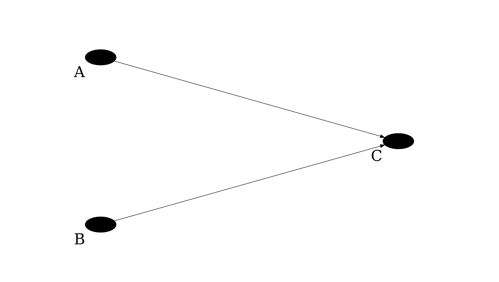

Download the notebook here!
Interactive online version: 
Causal Graphs¶
Definitions, patterns, and strategies¶
Definitions¶
A node represents a random variable labeled by letter. Observed random variables are marked by solid circle • and unobserved - by hollow circle ◦.
An edge shows dependence between joining variables.
Adjacent variables are connected by an edge.
Adjacent edges meet at a variable.
A directed edge represents the cause by a single-headed arrow.
A parent/child is the starting(tail)/ending(head) variable. Therefore, a directed edge represents a direct effect of a parent on a child.
A root is a variable that has no parent. In other words, it is an exogenous variable determined only by forces outside of the graph.
A sink is a variable with no children.
A path is a sequence of adjacent edges.
A directed path is a path traced out entirely along arrows tail-to-head. If there is a directed path from \(A\) to \(B\), \(A\) is an ancestor of \(B\); \(B\) is a descendant of \(A\).
A directed acyclic graph (DAG) is a graph with only arrows for edges and no feedback loops (i.e. no variable is its own ancestor or its own descendant):

Joint dependence of two variables on one or more common causes is shown either with unobservable variable or with bidirected dashed curved edge:


Patterns¶
Chain of mediation is a relationship when \(A\) affects \(B\) through \(A\)’s causal effect on \(C\) and \(C\)’s causal effect on \(B\):

Mutual dependence is a relationship when \(A\) and \(B\) are both caused by \(C\) (a variable \(C\) that affects both the dependent and independent variable is called a confounding variable):

Mutual causation is a relationship when \(A\) and \(B\) are both causes of \(C\) (a variable \(C\) that has two arrows running into it is called a collider):

A back-door path is a path between any causally ordered sequence of two variables that include a directed edge that points to the first variable.
Conditioning as a modeling strategy means transforming one graph into a simpler set of component graphs where fewer causes are represented.
Strategies¶
A back-door criterion is a set of conditions used to determine whether or not conditioning on a given set of observed variable will identify the causal effect. The causal effect is identified by conditioning on a set of variables \(Z\) if and only if all back-door paths between the causal variable and the outcome variable are blocked after conditioning on \(Z\). All back-door paths are blocked by \(Z\) if and only if each back-door path: - contains a chain of mediation \(A → C → B\) where the middle variable \(C\) is in \(Z\), or - contains a fork of mutual dependence \(A ← C → B\), where the middle variable \(C\) is in \(Z\), or - contains an inverted fork of mutual causation \(A → C ← B\), where the middle variable \(C\) and all of \(C\)’s decendents are not in \(Z\).
A front-door criterion is an empirical strategy used to identify the causal relationship flowing from \(A\) to \(B\) if one can find a mechanism C which: - lies on the causal path between \(A\) and \(B\), and - it is the only such mechanism, and - it is not affected by the unobserved confounder \(U\):

You can find more on front-door criterion application in the Bellemare & Bloem (2020) paper.
References¶
Bellemare, M., & Bloem, J. (2020). The paper of how: Estimating treatment effects using the front-door criterion. Working Paper.
Morgan, S. L., & Winship, C. (2014). Counterfactuals and causal inference. Cambridge, England: Cambridge University Press.
Pearl, J. (2009). Causality. Cambridge, England: Cambridge University Press.